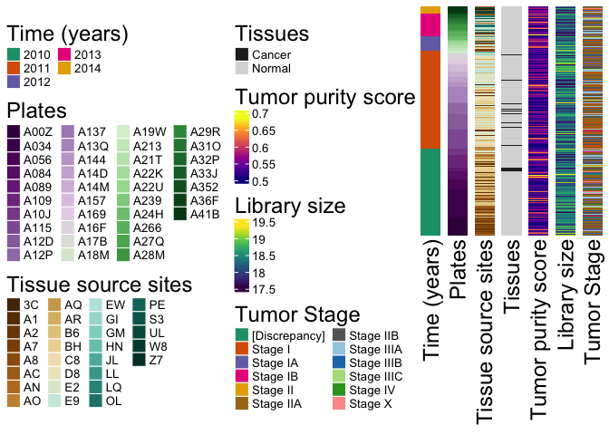
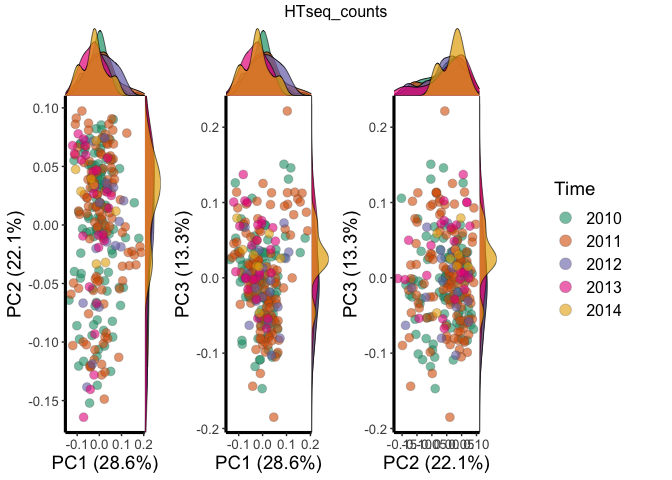
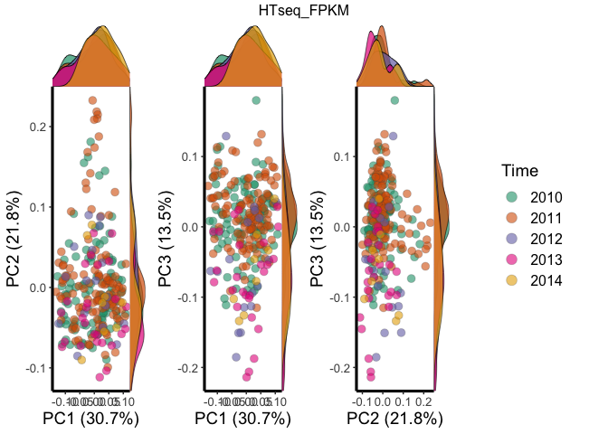
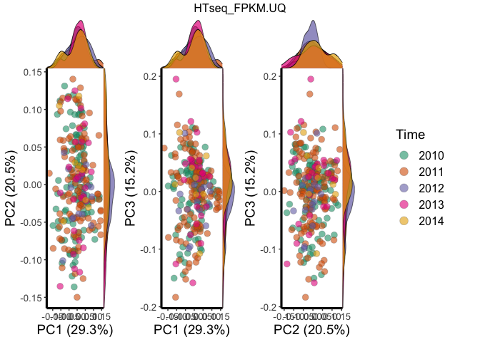
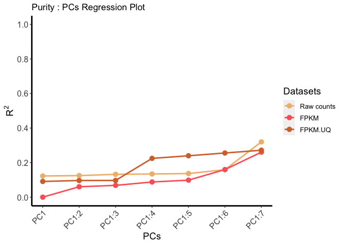
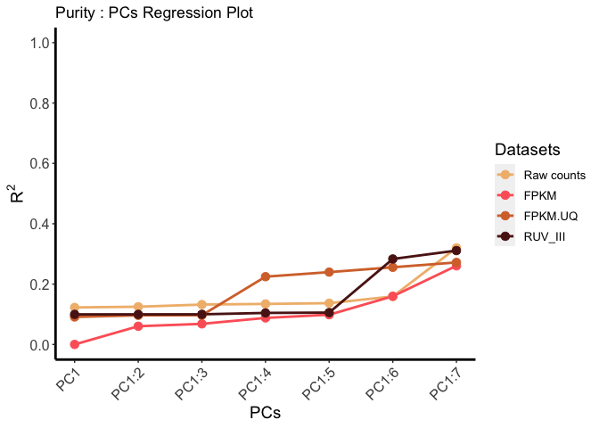

The goal of tcgaCleaneR is to provide a user-friendly R package to help Bioinformaticians with easy access to a tool that can perform Data Wrangling and Data Analysis on TCGA Pan Cancer Dataset. The package contains a subset of the original TCGA Breast Cancer Data collected from TCGA. The package also contains a detailed set of functionalities that allows user to identify and handle unwanted variations in the TCGA datasets.
Installation
You can install the development version of tcgaCleaneR from GitHub with:
# install.packages("devtools")
devtools::install_github("AbhishekSinha28/tcgaCleaneR", ref="master")TCGA Functionality
This is a quick walk trough of the tcgaCleaneR functionalities. For the detailed information on the Data Wrangling and Data Analysis functions and arguments in tcgaCleaneR package, you can consider looking at the vignette.
At present, TCGA Pan Cancer Datasets supports Cancer Biology for only four Cancer types. These four cancer type (TCGA datasets) are Breast Cancer (BRCA), Lung Cancer (LUAD), Colon Cancer (COAD) and Rectum Cancer (READ). This implies that RUV-III analysis can only be performed for these four cancer types. This is because the RUV-III approach here requires at least one roughly known biologically homogeneous subclass of samples shared across sources of unwanted variation. Similarly, the vector correlation between Biology and PCs can only be viewed for these four Cancer types.
Data
data("brca.data")
brca.data
#> class: SummarizedExperiment
#> dim: 100 1196
#> metadata(0):
#> assays(3): HTseq_counts HTseq_FPKM HTseq_FPKM.UQ
#> rownames(100): TSPAN6 TNMD ... CROT ABCB4
#> rowData names(9): EnsemblGene_ids Gene_symbol ...
#> NanostringPanCancer_HK sinscorePanCancer_HK
#> colnames(1196): TCGA-A8-A06Z-01A-11R-A00Z-07
#> TCGA-A8-A08F-01A-11R-A00Z-07 ... TCGA-5T-A9QA-01A-11R-A41B-07
#> TCGA-BH-A0H9-11A-22R-A466-07
#> colData names(12): Samples Tissues ... CPE SubtypesData Wrangling
Gene Filter
filtered.data <- filterGenesByBiotypes(data=brca.data,gene.type=c("protein.coding"))Removing lowly expressed genes
filtered.data1 <- filterLowExprGenes(data=filtered.data,gene_count = 20,sample_size = 200)Purity Filter - Filter Samples based on Tumor Purity
filtered.data2 <- filterSamplesByPurity(data= filtered.data1,purity_cutoff= 0.50)Library Size Filter
Filter samples based on library size
filtered.data3 <- filterSamplesByLibSize(data = filtered.data2, ls_cutoff = 17.5)Data Analysis
Study Design Plot
The idea behind Study Design plot is to present the summarized information about the filtered data set using HeatMaps.
plotStudyOutline(data = filtered.data3)
PCA
Generate PCA
The principal components (in this context also called singular vectors) of the sample × transcript array of log-counts are the linear combinations of the transcript measurements having the largest, second largest, third largest, etc. variation, standardized to be of unit length and orthogonal to the preceding components. Each will give a single value for each sample.
# Is data input for PCA logical
is.logical(filtered.data3)
pca_data <- computePCA(data = filtered.data3, nPcs = 7, is.log = FALSE)Plot PCA
Once we have the PCs generated using the PCA function the next step is to visualize those PCs with respect to the sample features like Time, Tissue, Plate etc., to identify any unwanted variation by identifying patterns in the plots by feature.
library(ggplot2)
library(cowplot)
pca.plot.data <- plotPC(pca.data = pca_data, data = filtered.data3, group = "Time", plot_type = "DensityPlot", npcs = 3)
PCs correlation with unwanted variations
library(tidyverse)
corr_data <- plotPCsVar(pca.data = pca_data, data = filtered.data3, type = "purity", nPCs = 7)
corr_data
RUV - III
PRPS Generation
df9 <- createPRPS(data=filtered.data3, batch=c('Year', 'Plates'), purity='Purity_singscore',include.ls=T, include.purity=T, minSamplesPerBatchPS = 3, minSamplesForPuirtyPS = 3,
minSamplesForPurityPerBiology = 12, minSamplesForLibrarySizePerBatch = 6,
minSamplesForLibrarySizePS = 3)RUV-III
### data input
library(SummarizedExperiment)
### PRPS values
prps.batch <- df9$ps.batch
colnames(prps.batch) <- unlist(lapply(
colnames(prps.batch),
function(x) strsplit(x, '-')[[1]][1]
))
prps.ls <- df9$ps.ls
prps.purity <- df9$ps.purity
raw.data <- as.matrix(SummarizedExperiment::assay(filtered.data3, 'HTseq_counts'))
ruv.data <- cbind(raw.data ,prps.batch ,prps.ls, prps.purity )
ruv.data <- t(log2(ruv.data + 1)) # Taking Log
### replicate matrix
ruv.rep <- ruv::replicate.matrix(row.names(ruv.data))
gene.annot <- as.data.frame(SummarizedExperiment::rowData(filtered.data3))
### NCG sets - Select House Keeping Genes
ncg.set <- colnames(ruv.data) %in% gene.annot$Gene_symbol[gene.annot$RNAseq_HK == 'yes']
library(BiocParallel)
library(BiocSingular)
df10 <- runRUVIII(ruv.data = ruv.data, ruv.rep = ruv.rep, ncg.set = ncg.set, k=1,
BSPARAM = BiocSingular::bsparam(), return.info = TRUE)Combined Analysis
Combined data
#library(SummarizedExperiment)
gene.annot <- as.data.frame(SummarizedExperiment::rowData(filtered.data3))
sample.info <- as.data.frame(SummarizedExperiment::colData(filtered.data3))
ruv.iii.adj <- t(df10$new.ruv.data[1:ncol(raw.data) , ]) # transpose
raw.count <- SummarizedExperiment::assay(filtered.data3, 'HTseq_counts')
raw.count <- log2(raw.count + 1) # Taking Log
fpkm <- SummarizedExperiment::assay(filtered.data3, 'HTseq_FPKM')
fpkm <- log2(fpkm + 1) # Taking Log
fpkm.uq <- SummarizedExperiment::assay(filtered.data3, 'HTseq_FPKM.UQ')
fpkm.uq <- log2(fpkm.uq + 1) # Taking Log
RUV_III <- ruv.iii.adj
combined_data <- SummarizedExperiment(assays = list(HTseq_counts = raw.count, HTseq_FPKM = fpkm,
HTseq_FPKM.UQ = fpkm.uq, RUV_III = RUV_III),
colData = sample.info,
rowData = gene.annot)
combined_data
#> class: SummarizedExperiment
#> dim: 96 266
#> metadata(0):
#> assays(4): HTseq_counts HTseq_FPKM HTseq_FPKM.UQ RUV_III
#> rownames(96): TSPAN6 TNMD ... CROT ABCB4
#> rowData names(9): EnsemblGene_ids Gene_symbol ...
#> NanostringPanCancer_HK sinscorePanCancer_HK
#> colnames(266): TCGA-A8-A06Z-01A-11R-A00Z-07
#> TCGA-AN-A0AK-01A-21R-A00Z-07 ... TCGA-S3-AA11-01A-31R-A41B-07
#> TCGA-AC-A4ZE-01A-11R-A41B-07
#> colData names(12): Samples Tissues ... CPE SubtypesPCA on Combined Data
df11 <- computePCA(data = combined_data, nPcs = 7, is.log = TRUE)PCs correlation with unwanted variations in Combined Data
df12 <- plotPCsVar(pca.data = df11, data = combined_data, type = "purity", nPCs = 7)
df12